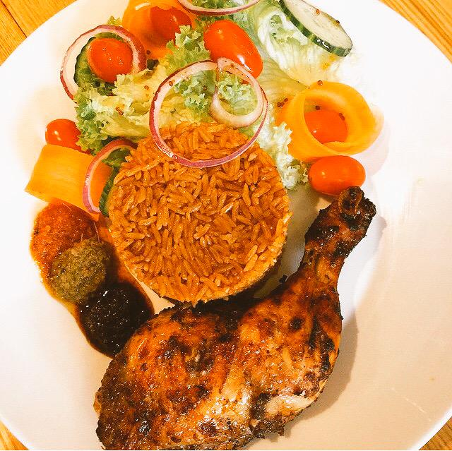

PICTURE OF FINISHED DISH

COOKING INSTRUCTIONS
HOW TO COOK JOLLOF RICE WITH CHICKEN
-
Season chicken with blended garlic and ginger, onions, salt
and white pepper. Cook the chicken with seasonings and water
to make chicken stock.
-
Remove chicken from stock and either fry or broil in the oven
until golden brown.
-
Blend tomatoes and cook down into a paste.
-
Saute onions and add in cooked down tomatoes and tomato sauce
or paste. Cook until the tomatoes shrink and start sticking to
the bottom of the pot.
-
To the pot add dried thyme, blended garlic and ginger,
and white pepper. Stir to combine.
-
Add chicken stock and water to the pot. Add in salt and
chicken bouillon powder.
-
Add washed rice to the pot, cover and cook on low heat until
the rice is fluffy.
-
Add carrots and green beans to rice if so desired.
Serve the Jollof Rice with the chicken.